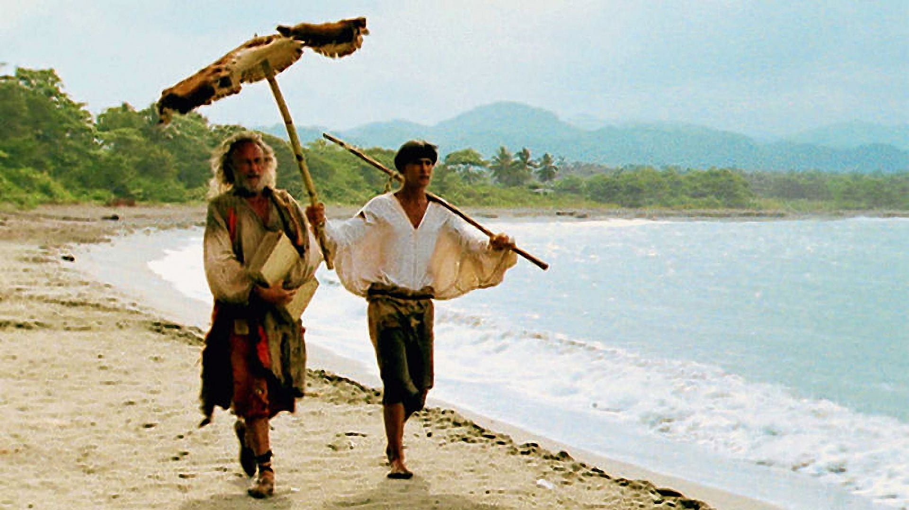

Kniha vypráví o Robinsonu Crusoe, který od dětství touží se stát námořníkem, ale ne tak jako jeho rodiče, kteří dobře ví jak je to na moři nebezpečné. Jednoho dne se Robinson rozhodne utéct a na palubu ho nakonec vezmou. Na palubě v půlce cesty celou loď přepadnou piráti a Robinson se ocitne v otroctví. Robinson je ale zachráněn španělskou kupeckou lodí, která záhy poté narazí na útes a ztroskotá a v tu chvíli robinson musel Robinson bojovat o svůj život. Když se probudil na pláži uvědomil si že je jediným přeživším. Robinson na ostrově strávil 28 let a prožil mnoho dobrodružství a mnohého se přiučil, jako například: jak rozdělat oheň, jak je důležité si měřit čas. Také na ostrově nalezl lidojedy přede kterými Robinson ochránil svého budoucího přítele Pátka. Jednoho dne na obzoru zahlédne loď a tak rozdělá oheň, který by na ně mněl upozornit. Loď si jich všimne a odveze robinsona zpátky do rodné Anglie.
